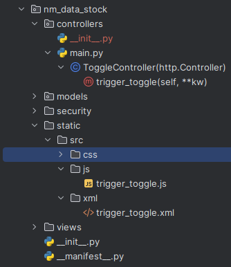

Heute möchte ich eine Lösung für ein Usability-Problem vorstellen, das ich kürzlich in Odoo hatte. In Odoo 12 gibt es neben der Schaltfläche „Bearbeiten/Speichern“ eine Schaltfläche zum Sperren, und Sie müssen auf beide klicken, um (1) die Seite zu entsperren und (2) sie bearbeitbar zu machen. Dies sollte in einem Schritt erfolgen, wodurch der Sperrmechanismus, der in den Lieferaufträgen (Klasse StockPicking) und Fertigungsaufträge (Klasse MrpProduction) verwendet wird. Die Lösung erfordert eine XML- und eine JavaScript-Datei sowie einen dedizierten Web-Controller. Die Lösung wird unten vorgestellt.

<?xml version=„1.0“ encoding=„UTF-8“?>
<openerp>
<data>
<template id=„assets_backend“ name=„trigger_toggle assets“ inherit_id=„web.assets_backend“>
<xpath expr=„.“ position=„inside“>
<script type=„text/javascript“ src=„/nm_data_stock/static/src/js/trigger_toggle.js“/>
</xpath>
</template>
</data>
</openerp>
Der Code ist ziemlich selbsterklärend. Wir verwenden die XML-Datei, um das Skript hinzuzufügen. Vergessen Sie nicht, es in der Manifest-Datei hinzuzufügen. Die JavaScript-Funktionen _onEdit und _onSave sind Funktionen des Kern-Webclients (genauer gesagt web.FormController), und wir fügen beiden Funktionen eine einfache URL-Analyse und einen AJAX-RPC-Aufruf hinzu.
odoo.define('nm_data_stock.trigger_toggle', function(require){
'use strict';
var ajax = require('web.ajax')
var FormController = require('web.FormController');
var triggerButton = FormController.include({
_onEdit: function () {
// wait for potential pending changes to be saved (done with widgets
// allowing to edit in readonly)
this.mutex.getUnlockedDef().then(this._setMode.bind(this, 'edit'));
const url = new URL(this.$el.context.baseURI)
const parsedHash = new URLSearchParams(url.hash.substring(1))
const id = parsedHash.get('id')
const model = parsedHash.get('model')
if (model.toString() == 'mrp.production' || model.toString() == 'stock.picking')
{
console.log('OnEdit '+ id + ' '+ model);
ajax.jsonRpc('/web/webclient/trigger_toggle', 'call', {'id': id,'model': model,'button_state': 'edit'} )
}
},
_onSave: function (ev) {
ev.stopPropagation(); // Verhindern, dass x2m-Zeilen automatisch gespeichert werden
var self = this;
this._disableButtons();
const url = new URL(this.$el.context.baseURI)
const parsedHash = new URLSearchParams(url.hash.substring(1))
const id = parsedHash.get('id')
const model = parsedHash.get('model')
if (model.toString() == 'mrp.production' || model.toString() == 'stock.picking')
{
console.log('OnSave '+ id + ' '+ model);
ajax.jsonRpc('/web/webclient/trigger_toggle', 'call', {'id': id, 'model': model,'button_state': 'save'} )
}
this.saveRecord().always(function () {
self._enableButtons();
});
},
})
})
Unten sehen Sie den Webcontroller als Endpunkt für den oben gezeigten AJAX-RPC-Aufruf…
controllers/main.py
from odoo import http
from odoo import api,fields
from urllib import parse
class ToggleController(http.Controller):
@http.route('/web/webclient/trigger_toggle', type='json', auth=„none“)
def trigger_toggle(self, **kw):
id = kw.get('id')
model = kw.get('model')
if model and id:
print(model)
obj = http.request.env[model].browse(int(id))
return obj.sudo().trigger_toggle(kw.get('button_state'))
Zu guter Letzt die Implementierung in den beiden Klassen.
models/stock.py
class StockPicking(models.Model):
"""
Inherit class StockPicking from module stock.
"""
def trigger_toggle(self, state):
if state=='edit':
self.is_locked = False
if state=='save':
self.is_locked = True
class MrpProduction(models.Model):
"""
Inherit class MrpProduction
"""
def trigger_toggle(self, state):
if state=='edit':
self.is_locked = False
if state=='save':
self.is_locked = True